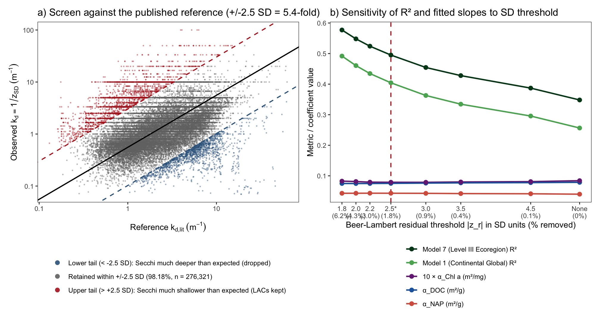
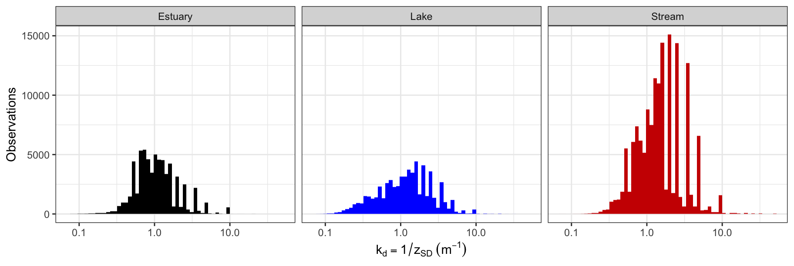

Section 4 Values Below Reporting Limits & Beer–Lambert Plausibility Screening
Even after parameter and unit harmonization, roughly 2% of multi-agency WQP records contain field-recording or unit-entry anomalies that can heavily leverage ordinary least squares (OLS) slopes. However, simple marginal quantile trimming (clipping the top and bottom 0.1% or 1% of each variable independently) throws away genuine oligotrophic alpine lakes (Secchi up to 13.96 m) and real storm-flow sediment plumes (TSS up to 978 mg/L) while missing joint physical contradictions in the middle of the distribution.
To clean recording errors without truncating real extremes or introducing statistical circularity, R/prep.R uses a two-stage protocol (n = 276,321):
4.1 Stage 1: Values Below Reporting Limits (trim_simultaneous())
Some Chl a, DOC and TSS values lie below the limits at which they can be reliably reported (Chl a 0.1 µg/L, DOC 0.25 mg/L, TSS 0.5 mg/L). They are kept, so all 281,439 simultaneous 4-variable matchups are retained, but they are not all given the value of the limit. Substituting the limit (or any other single number) for every such result distorts the low end of the distribution (Helsel 2006). Instead, following the “fill-in” approach of Lubin et al. (2004), each value below a limit is replaced by a random draw from a lognormal distribution that was fitted to that constituent by maximum likelihood for left-censored data and truncated at the limit (impute_lacs() in R/prep.R). Fewer than 3% of values are affected, well below the roughly 30% at which Lubin et al. found that the approach starts to bias variances.
| Variable | Reporting limit | Below limit, all 3-LAC records | Below limit, 4-variable matchups | Fitted lognormal median | Fitted log SD | Draws: 10th percentile | Draws: median | Draws: 90th percentile |
|---|---|---|---|---|---|---|---|---|
| Chlorophyll a (µg/L) | 0.10 | 2,884 (0.59%) | 574 (0.20%) | 5.71 | 1.38 | 0.04 | 0.074 | 0.095 |
| Dissolved organic carbon (mg/L) | 0.25 | 416 (0.09%) | 142 (0.05%) | 5.93 | 0.83 | 0.17 | 0.220 | 0.250 |
| Total suspended solids (mg/L) | 0.50 | 7,919 (1.63%) | 2,244 (0.80%) | 8.62 | 1.22 | 0.19 | 0.370 | 0.480 |
Each draw is tied to its record (site, date and variable), so a record has the same value in the training set and in the application set and the results are reproducible without a random seed. Secchi depth has no values below its 0.01 m limit after the flag screening of Section 2.
The same rule is applied to non-algal particles. NAP is TSS minus the algal dry mass estimated from Chl a. Where that estimate equals or exceeds TSS (2,424 training matchups, 0.88%), the non-algal mass is below what TSS can resolve, and NAP is drawn below the TSS reporting limit from a lognormal fitted to NAP in the same way (impute_nap()). Positive NAP estimates are kept as calculated.
| Variable | Reporting limit | Minimum | Median | 99.9th Percentile | Maximum Retained |
|---|---|---|---|---|---|
| Chlorophyll a (µg/L) | 0.10 | 0.010 | 7.33 | 323.000 | 990.290 |
| Dissolved Organic Carbon (mg/L) | 0.25 | 0.085 | 6.20 | 48.000 | 49.985 |
| Total Suspended Solids / SSC (mg/L) | 0.50 | 0.036 | 8.50 | 340.000 | 978.000 |
| Secchi Disk Depth (m) | 0.01 | 0.010 | 0.80 | 7.687 | 14.330 |
4.2 Stage 2: Screen Against a Published Reference Attenuation & “Odd-One-Out” Rule
When all four measurements (Secchi, Chl a, DOC, and TSS) are collected on the same water sample, they provide an internal physical cross-check: do the three water-chemistry constituents agree with the observed Secchi depth in Beer–Lambert space, or is one of the four measurements an obvious outlier?
We compare each matchup’s \(1/z_{SD}\) with a reference attenuation calculated from its three constituents. Every coefficient in the reference is a published value for diffuse attenuation of photosynthetically active radiation, used exactly as printed in its source (reference_attenuation() in R/prep.R). None is fitted to, or adjusted with, our data.
\[K_{\text{ref}} = 0.1 + 0.0625\,\text{NAP} + k_{\text{DOC}}\,\text{DOC} + 0.016\,\text{Chl }a, \qquad k_{\text{DOC}} = \begin{cases} 0.22 & \text{lakes and streams} \\ 0.047 & \text{estuaries} \end{cases}\]
\[r = \log_{10}\!\left(\frac{1/z_{SD}}{K_{\text{ref}}}\right)\]
| Term | Value | Source | Where in the source | Measured in |
|---|---|---|---|---|
| Background | 0.1 m⁻¹ | Gohin et al. (2005) | Eq. 21: \(K_{PAR} = 0.1 + 0.0625\,nLvSPM + 0.05\,\text{Chl}^{0.80}\) | Bay of Biscay shelf |
| Non-algal particles | 0.0625 m² g⁻¹ | Gohin et al. (2005) | Eq. 21. Their non-living suspended matter is defined by the same subtraction we use (their Eqs. 15–16) | Bay of Biscay shelf |
| DOC, lakes and streams | 0.22 m² g⁻¹ | Morris et al. (1995) | Table 3, p. 1387: \(K_{dPAR} = 0.22\,[\text{DOC}] + 0.07\,[\text{Chl }a] - 0.05\) (\(n = 63\), \(r^2 = 0.68\)) | 63 lakes in Alaska, Colorado, Pennsylvania and Argentina |
| DOC, estuaries | 0.047 m² g⁻¹ | Gallegos (2001) | Table 5, p. 393: mean of four stations (0.037–0.051) | Chesapeake Bay |
| Chl a | 0.016 m² mg⁻¹ | Bannister (1974) | p. 6; on p. 10, the mean of four estimates from 0.013 to 0.020 | Lakes and ocean |
Three choices were made, and each is stated here so that it can be judged:
- DOC by water type. Dissolved organic matter in lakes is far more coloured per unit carbon than in Chesapeake Bay, and the published coefficients differ nearly five-fold. Each is used in the kind of water it was measured in. No published coefficient for streams was found; streams are given the lake value.
- Chl a from Bannister, not from Gohin or Morris. Bannister’s value is supported independently by Atlas and Bannister (1980; 0.014 ± 0.002 at the surface, from absorption spectra) and Smith and Baker (1977, Scripps report SIO Ref. 77-2, published 1978; 0.016 ± 0.003, from ocean irradiance profiles).
- No conversion between attenuation and Secchi depth. See the deep dive below: a constant conversion factor cancels out of the screen.
Across all 281,439 four-variable matchups, the log ratio \(r\) has a mean of \(\bar{r} = -0.255\) and a standard deviation of \(\text{SD}(r) = 0.294\) log₁₀ units. Standardizing each matchup’s value as \(z_r = (r - \bar{r}) / \text{SD}(r)\), we keep matchups with \(|z_r| \le 2.5\), that is, within 5.4-fold of the mean ratio either way. This retains 276,321 (98.18%) training observations and flags 5,118 (1.82%) discordant outliers, which fall into two distinct physical categories with asymmetric disposition (Figure 4.1a):
- Upper Tail (\(z_r > +2.5\text{ SD}\), 3,496 records = 1.24%) —
Secchiis the odd one out: Secchi depth is much shallower than the three constituents imply. These records are 74% streams, with a median Secchi depth of 0.2 m and low constituent concentrations (medianTSS4 mg L⁻¹,DOC3.5 mg L⁻¹,Chl a1.5 µg L⁻¹). That pattern is consistent with a disk resting on the bed of a clear, shallow stream, but we did not check it against field notes. Because the three water-chemistry measurements agree with each other, these records are excluded from regression training (build_training()), but in the ternary application dataset (build_application()) onlySecchiis set toNA, so the 3-constituent water chemistry is kept with a modeled Secchi depth. - Lower Tail (\(z_r < -2.5\text{ SD}\), 1,622 records = 0.58%) — One of the chemistry constituents (
Chl a,DOC, orTSS) is the odd one out: Secchi depth is much deeper than the three constituents imply (median Secchi depth 2.5 m alongside a medianTSSof 5 mg L⁻¹). Possible causes include unit-entry or sample-matching errors, which we did not verify. Because all three constituents are required to place a sample in ternary space, lower-tail records are excluded from both training and ternary application.

Figure 4.1: (a) Observed diffuse attenuation (kd = 1/z_SD) vs. the reference Beer–Lambert attenuation (kd,lit) across all 281,439 matchups, showing the +/-2.5 SD (5.4-fold) tolerance band, upper-tail records where Secchi depth is much shallower than expected (red; Secchi dropped but 3-LAC chemistry kept in application), and lower-tail records where it is much deeper than expected (blue; dropped). (b) Sensitivity of R² and fitted slopes to the SD cutoff.
Because this screen acts only on the ratio \(k_d / k_{d,\text{lit}}\), the extremes of each variable (Secchi up to 13.96 m, TSS up to 978 mg/L, Chl a up to 990 µg/L) pass intact:
| Dataset | n | Secchi (m) [Min / Med / Max] | TSS (mg/L) [Min / Med / Max] | DOC (mg/L) [Min / Med / Max] | Chl a (µg/L) [Min / Med / Max] |
|---|---|---|---|---|---|
| Before plausibility screen (Stage 1 only) | 281,439 | 0.01 / 0.80 / 14.33 | 0.04 / 8.5 / 978.0 | 0.09 / 6.20 / 50.0 | 0.01 / 7.33 / 990.3 |
| After plausibility screen (Stage 2 final training set) | 276,321 | 0.02 / 0.80 / 13.96 | 0.04 / 8.7 / 978.0 | 0.13 / 6.22 / 50.0 | 0.01 / 7.48 / 990.3 |
4.3 Deep Dive: Is the Screen Sourced, and Is It Circular?
A screen that compares Secchi depth with a function of the three constituents, and then fits a model of the same form, invites two questions. Where do the reference numbers come from? And does the screen create the fit it is meant to protect? This section answers both.
4.3.1 Converting between attenuation and Secchi depth
The published coefficients are per unit of diffuse attenuation \(K_d\). Our measurements are Secchi depths. The two are linked by (Eq. 1 of the manuscript)
\[K_d = \frac{a}{z_{SD}} \quad\Longleftrightarrow\quad \frac{1}{z_{SD}} = \frac{K_d}{a}\]
The factor \(a\) has a theoretical basis. A Secchi disk disappears at a depth set by the sum of the beam attenuation coefficient \(\alpha\) and the diffuse attenuation coefficient \(K\):
\[z_{SD} = \frac{\Gamma}{\alpha + K}, \qquad \Gamma \approx 8 \text{ to } 9\]
(Tyler 1968, Eq. 6, with \(\Gamma = 8.69\); Preisendorfer 1986, Eq. 55). Multiplying both sides by \(K\) gives
\[a = K\,z_{SD} = \frac{\Gamma}{1 + \alpha/K}\]
so \(a\) is small where scattering by particles makes \(\alpha\) large relative to \(K\), and large where absorption by colour dominates. Measured values agree: in 58 Alaskan lakes, \(K_d \times z_{SD}\) had a median of 1.86 in clear lakes, 0.93 in turbid lakes and 2.70 in stained lakes, and it ranged from 0.59 to 4.09 across 35 published studies (Koenings and Edmundson 1991, Table 2 and Table 6).
Why the screen needs no conversion. If \(1/z_{SD} = K_d / a\), then for a matchup whose true attenuation equals the reference,
\[r = \log_{10}\!\left(\frac{1/z_{SD}}{K_{\text{ref}}}\right) = -\log_{10} a\]
The screen uses \(z_r = (r - \bar r)/\text{SD}(r)\). A constant \(a\) changes every \(r\) by the same amount, changes \(\bar r\) by that amount too, and leaves \(z_r\) unchanged. Variation of \(a\) between waters remains in \(r\) and is part of what the 2.5 SD band has to accommodate.
An independent check on the reference. The mean log ratio is \(\bar r = -0.255\), which corresponds to \(a = 10^{-\bar r} = 1.80\). By water type, the median of \(K_{\text{ref}} \times z_{SD}\) is:
| Water type | Matchups | 25th percentile | Median | 75th percentile | Published values of K_d × z_SD |
|---|---|---|---|---|---|
| Estuary | 64,375 | 0.93 | 1.28 | 1.85 | 1.44 turbid coastal (Holmes 1970); 1.7 sea water (Poole and Atkins 1929) |
| Lake | 61,593 | 1.64 | 2.46 | 3.52 | 1.86 clear, 2.70 stained, 0.93 turbid (Koenings and Edmundson 1991) |
| Stream | 155,471 | 1.19 | 1.82 | 2.91 | none found |
Each coefficient was assigned to the kind of water it was measured in, and none was adjusted. With that assignment the reference gives products close to the published ones for each water type. To be plain about the order of events: we examined this table, and the alternatives in the sensitivity table below, before settling on DOC by water type. Secchi depth therefore informed one choice between two published DOC coefficients. It did not set the value of any coefficient.
4.3.2 Does the screen create the fit?
Shuffled-Secchi test. Secchi depths are shuffled at random among the matchups, which removes any real relation between Secchi depth and the constituents. The screen is applied to the shuffled data and the global model is fitted to what remains (screen_null_test()). If the screen manufactured fit, \(R^2\) would be well above zero.
| R² of the global model | Matchups flagged | |
|---|---|---|
| Shuffled Secchi, no screen | 0.0000 (mean of 20 shuffles) | — |
| Shuffled Secchi, after the screen | 0.0019 (mean; maximum 0.0024) | 1.3% |
| Real data, no screen | 0.256 | — |
| Real data, after the screen | 0.404 | 1.8% |
The screen adds 0.002 to \(R^2\) when there is nothing to find. The gain on the real data comes from removing matchups that disagree with the other three measurements by more than 5.4-fold.
How much do the results depend on the reference? All ten models were refitted with each alternative below (screen_reference_sensitivity()).
| Reference | Kept | Flagged | R² Model 1 / 7 / 10 | Model 1 α: NAP / DOC / Chl a | K_ref × z_SD: estuary / lake / stream | R², shuffled Secchi |
|---|---|---|---|---|---|---|
| Adopted: DOC 0.22 in lakes and streams (Morris), 0.047 in estuaries (Gallegos) | 276,321 | 1.8% | 0.40 / 0.50 / 0.53 | 0.0430 / 0.0753 / 0.0079 | 1.28 / 2.46 / 1.82 | 0.0017 |
| DOC 0.22 in all waters (Morris) | 276,041 | 1.9% | 0.42 / 0.51 / 0.54 | 0.0425 / 0.0747 / 0.0080 | 2.44 / 2.46 / 1.82 | 0.0022 |
| DOC 0.047 in all waters (Gallegos) | 273,109 | 3.0% | 0.47 / 0.55 / 0.59 | 0.0474 / 0.0685 / 0.0084 | 1.28 / 1.10 / 0.92 | 0.0025 |
| Earlier, unsourced values (0.08, 0.040, 0.070, 0.016) | 274,439 | 2.5% | 0.45 / 0.54 / 0.57 | 0.0442 / 0.0711 / 0.0087 | 1.18 / 1.15 / 0.88 | 0.0025 |
| No screen | 281,439 | 0.0% | 0.26 / 0.35 / 0.38 | 0.0399 / 0.0787 / 0.0084 | — | — |
Three things follow. No version of the screen creates fit by itself. The choice of DOC coefficient moves \(R^2\) by up to 0.07 and the Model 1 coefficients by about 10% or less. And the adopted reference is the one whose \(K_{\text{ref}} \times z_{SD}\) is closest to published values in each water type; it gives the lowest \(R^2\) of the three sourced options.
What remains empirical. The width of the band, 2.5 standard deviations of \(r\), is taken from the data. It is a tolerance, not a fitted coefficient, and the right-hand panel of the figure above shows how \(R^2\) and the coefficients change if it is made wider or narrower.
4.4 Pure-Water Attenuation Offset (\(k_w\)) and \(k_d\) Distributions
Following Lee et al. (2015, 2018), we set diffuse attenuation to \(k_d = 1 / z_{SD}\) and define baseline pure-water attenuation (\(k_w\)) from the clearest water in the training set (\(\max(z_{SD}) = 13.96\text{ m}\)):
\[k_w = \frac{1}{1.5 \times \max(z_{SD})} = \frac{1}{1.5 \times 13.96\text{ m}} = 0.04776\ \text{m}^{-1}\]
This value of \(k_w\) is used consistently across both model fitting and Secchi depth prediction (\(\hat{z}_{SD} = 1 / [\hat{k}_{d,\text{non-water}} + k_w]\)).

Figure 4.2: Distribution of diffuse light attenuation (kd = 1 / z_SD) across estuaries, lakes, and streams in the final training dataset (n = 276,321).